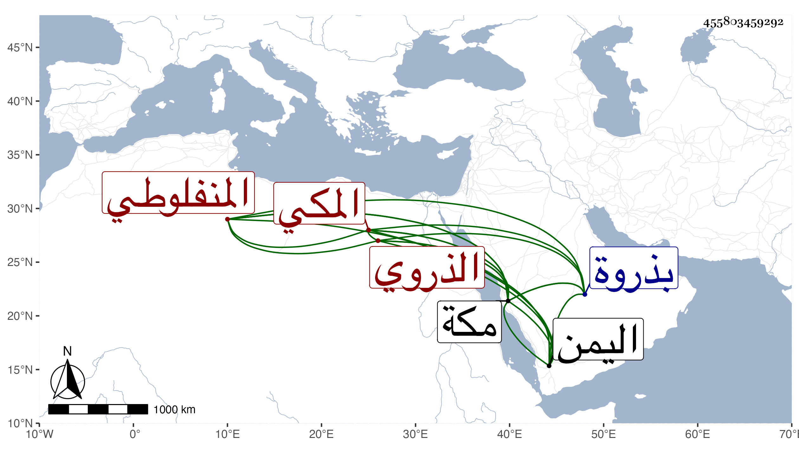

0902Sakhawi.DawLamic.ITO20230111-ara1.EIS1600.455803459292
Biography ID: 455803459292
97
محمد بن أحمد بن محمد بن أحمد بن علي بن أحمد الولوى بن الشهاب الذروي المنفلوطي المكي الماضي أبوه . ولد بذروة من صعيد مصر الأعلى ، وقدم مكة مع أبيه قبل إكمال سنتين في سنة اثنتي عشرة وحفظ القرآن وأدب به الأطفال بأخرة . وكان كثير التلاوة ، وسافر إلى اليمن ولم يكن مرضيا . مات بمكة في ربيع الأول سنة ثمان وسبعين ودفن بجانب قبر أبيه من المعلاة . ذكره ابن فهد عفا الله عنه .
